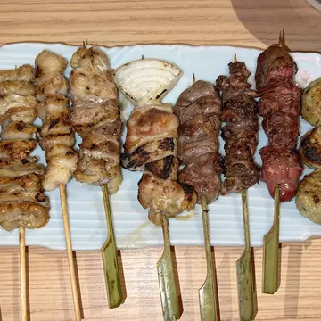

ささとみ★★★★★ · 2日前
ねぎまの塩が最高。カウンターで焼くところを見ながら飲めるのも楽しい。また来ます！
返信の下書き · LINEでお送りします
さとみ様、ご来店ありがとうございます。ねぎまの塩を気に入っていただけて、焼き場一同とてもうれしいです。次はぜひ、季節の串もお試しください。カウンターでお待ちしております。 鳥と炭 店主
ポイント：お名前でお礼、気に入ってくださった品にふれて、次に来る理由をひとつ。
サービス · 日本 · 毎月
お客さまは、ホームページより先にGoogleマップでお店を見ています。投稿、写真、口コミへの返信、正しい営業時間。地図の上のお店を、毎月きちんと手入れします。返信はLINEで確認してから投稿し、月のはじめに短いレポートをお送りします。


 +24
+24 3
34.1 ★★★★★ (37)
焼き鳥店 · ￥2,000〜3,000飲食店2
営業中 · 24:00に閉店 · 月曜定休営業時間の情報がありません1
下北沢の路地にある、炭火の焼き鳥屋。カウンターから焼き場が見えます。英語メニューあり。4
今週の限定は、月見つくね。ラストオーダーは23:30です。· 3日前
オープンセール開催中！· 2年前
5ささとみ · ★★★★★ · 2週間前
ねぎまの塩が最高。焼くところを見ながら飲めるカウンターも楽しい。
オーナーからの返信さとみ様、ありがとうございます。焼き場一同、とてもうれしいです。次はぜひ季節の串も。6
制作例の焼き鳥屋（架空のお店）での見本です。口コミの数は変えていません。変わったのは、情報と写真と返信です。
なぜ地図なのか
毎月やること
お店の方は、いつもどおり営業するだけ。ときどきLINEで写真を送っていただければ、あとはこちらで進めます。
口コミへの返信
口コミを選ぶと、お店にお送りする返信の下書きが見られます。お店のOKがあるまで、投稿はしません。
ささとみ★★★★★ · 2日前
ねぎまの塩が最高。カウンターで焼くところを見ながら飲めるのも楽しい。また来ます！
返信の下書き · LINEでお送りします
さとみ様、ご来店ありがとうございます。ねぎまの塩を気に入っていただけて、焼き場一同とてもうれしいです。次はぜひ、季節の串もお試しください。カウンターでお待ちしております。 鳥と炭 店主
ポイント：お名前でお礼、気に入ってくださった品にふれて、次に来る理由をひとつ。
KK.T.★★★ · 5日前
味はおいしい。ただ、金曜の夜で、最初の串が出てくるまで30分以上待った。
返信の下書き · LINEでお送りします
K.T.様、ご来店と率直なご感想をありがとうございます。金曜の夜、長くお待たせしてしまい申し訳ございません。混み合う時間は、各テーブルの最初の数本を先にお出しするようにいたしました。またのお越しをお待ちしております。 鳥と炭 店主
ポイント：言い訳をせず、ひと言のお詫びと、変えたこと。変える中身は、先にお店と相談して決めます。
EEmmaローカルガイド · ★★★★ · 1週間前
Tiny, smoky and great. No English menu, but the staff were patient and we pointed at things. Get the tsukune!
返信の下書き · 英語の口コミには英語で
Thank you, Emma! We’re so glad you found our little counter. Good news: we now have an English menu, so next time you can choose without pointing. See you again! — Tori to Sumi
ポイント：お客さまの言葉で返信。旅行の前に、その方の友人も読んでいます。
悪い口コミも、消したり隠したりはしません。Googleのポリシーに反するもの（関係のない内容、なりすまし、個人攻撃など）だけを、Googleに報告します。
毎月のレポート
見られた回数、そこからの行動、検索された言葉、そして来月やること。30ページの資料ではなく、LINEで読める長さです。
鳥と炭 様 · 今月のGoogleマップ見本のレポート · 架空のお店
検索された言葉
来月やること
架空のお店の見本です。数字は例で、成果をお約束するものではありません。
口コミのお願い
読み取ると、すぐにお店の口コミ投稿画面が開くカードです。すべてのお客さまに同じお願いをして、特典も「★5で」もつけません。Googleのルールであり、日本ではステマ規制の対象にもなるためです。
カードの言語
かたち
鳥と炭
ご来店ありがとうございました。
よろしければ、Googleマップで
ご感想をお聞かせください。
Thank you for coming.
If you have a moment, we’d love
to hear what you thought on Google Maps.
感谢您的光临。
如果方便，欢迎在谷歌地图上
留下您的感想。
방문해 주셔서 감사합니다.
괜찮으시다면 Google 지도에
소감을 남겨 주세요.
スマホのカメラで読み取ってください
Scan with your phone camera
请用手机相机扫描
휴대폰 카메라로 스캔해 주세요
見本のQRは、このページを開きます。実際のカードでは、お店の口コミ投稿画面が開きます。
やらないこと
MEO対策の業者には、残念ながら良くない評判もあります。だから、やらないことを先に書いておきます。
料金
￥14,800/月
東京の目安です。正式なお見積りは、無料相談のあとに書面でお出しします。
毎月の運用の前に、一度だけプロフィールを整えます（情報、カテゴリー、説明文、写真）。これは「Googleマップ対策」（東京の目安 ￥19,800）と同じ内容で、ホームページ制作のプランには最初から含まれています。
お店での写真撮影は、別のサービスです。
Googleマップ対策を見る →順位はGoogleが決めるため、お約束はできません。正確でもれのない情報、写真、口コミへの返信は、Google自身がすすめている方法です。そして何より、見た人にとって「行ってみたい」と思えるお店のページになります。
いいえ。関係のない内容、なりすまし、個人攻撃など、Googleのポリシーに反する口コミだけをGoogleに報告できます。それ以外は、落ち着いた誠実な返信のほうが、読む人に伝わります。
いいえ。下書きをLINEでお送りし、OKをいただいてから投稿します。ご希望があれば、★5へのお礼など、そのまま投稿してよい範囲を最初に決めておきます。
前月末までに、LINEかメールでお知らせください。違約金はありません。私たちが管理者から外れるだけで、投稿した内容はそのままお店のページに残ります。
はい。Googleマップだけでもご依頼いただけます。ホームページがあれば、両方をつなげます。